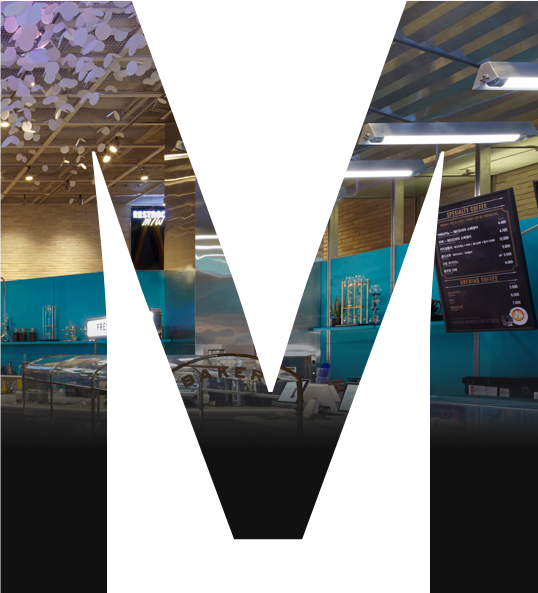

02
twsome mobile
renewal design & publishing
PROJECT GOAL
투썸플레이스 PC버전 홈페이지와 마찬가지로 모바일버전 페이지도 비주얼적으로
프리미엄 분위기에 조금 더 어울리게 리뉴얼 하려고 하였습니다.
뷰포트가 작은 모바일 디바이스에서 효율적으로 정보를 전달하기 위해 여러가지
방법을 생각해보고 적용해본 프로젝트입니다.
STRATEGE
모바일 기기는 뷰포트가 작기때문에 한번에 많은 정보를 보여주기 위해선 최대한 효율적인
구성이 필요했습니다. 스크롤의 움직임을 감지하여 헤더가 위아래로 움직이게 하여 조금 더
많은 정보를 볼 수 있도록 구성하였습니다.
STYLE GUIDE
COLOR
FONT